Ten original faces for a rectangular smartwatch (368 × 448). Each one shows the main screen, an interactive state and the dim always-on screen. Scroll through and judge each design.
01 / 10
Encore
Encore is a watch face that knows what you love: when you start a new series, your watch gifts you a face designed around that show's world, and you can pick a favourite character or describe a face in one sentence to have it made for you. The time is always the hero, large and high-contrast for a one-second glance, while a single glass complication carries heart rate, steps or your episode progress. All text is at least 21 px and every icon at least 25 px, and the always-on state drops to true black with type only.
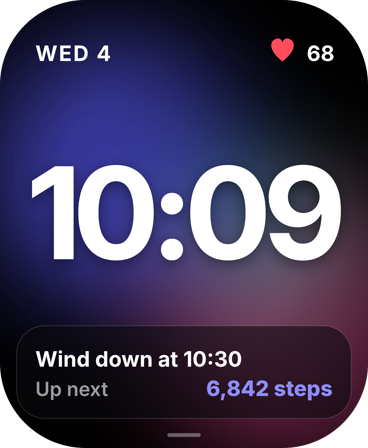
Active Display · Studio
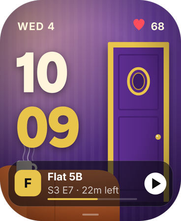
Active Display · The Apartment
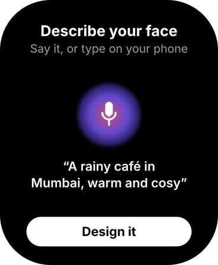
Interactive · Describe itInteractive · Favourite character
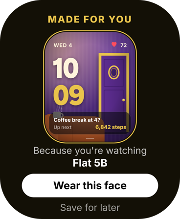
Interactive · Gift reveal
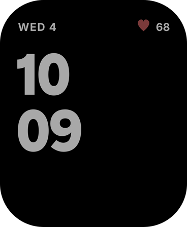
Always-On
02 / 10
Contour
Contour draws your day as a topographic map: every active hour raises the land, so a morning run becomes a tall peak and a quiet afternoon stays flat, with the highest point marked by a glowing pin. The time floats in light type over the contour lines, and a swipe turns the map into an elevation profile of the whole day. Always-on keeps a few faint grey contour lines under the time.
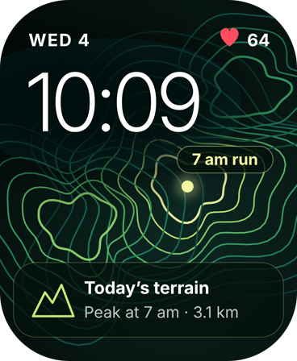
Active Display
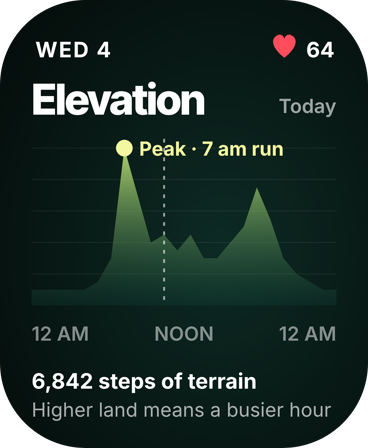
Interactive · Elevation
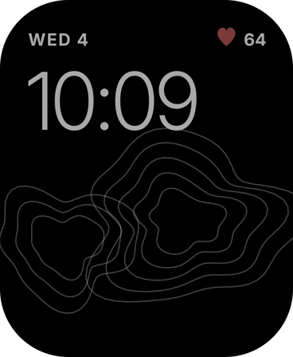
Always-On
03 / 10
Heartwritten
Heartwritten draws the time with your own heartbeat: a single glowing ECG line runs across the screen and rises into the digits, so the '1' is literally a heartbeat spike and every beat travels through the numbers. Resting, the line is calm and rose-red; in a workout it turns amber, beats harder and the card shows your heart-rate zone. Always-on keeps the same line as a thin grey trace on true black.
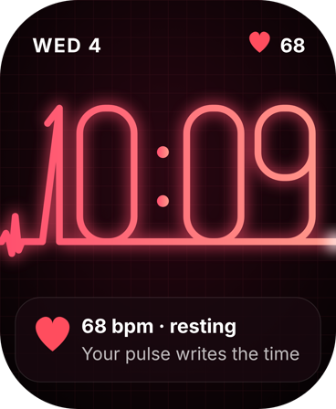
Active Display
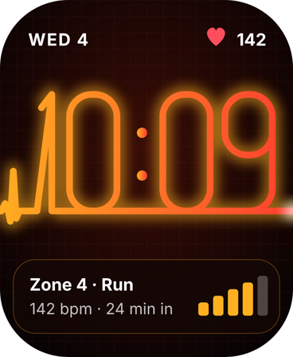
Interactive · Workout
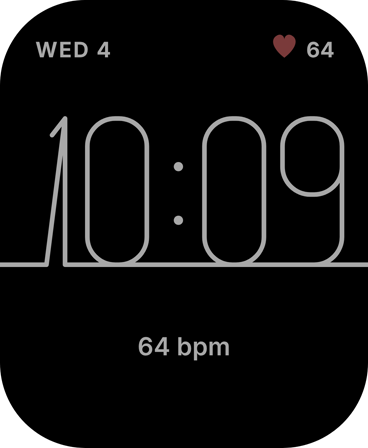
Always-On
04 / 10
Inner Weather
Inner Weather turns your stress level into the sky behind the time: when your heart-rate variability is healthy it is a clear, sunlit morning, and as stress rises clouds gather until a storm breaks. Instead of another number to decode, you feel your state at a glance, and a storm offers a one-tap breathing break. Always-on keeps the time and a single word forecast on true black.
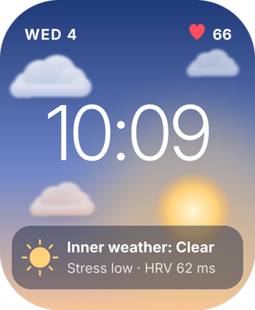
Active Display
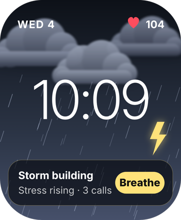
Interactive · Storm building
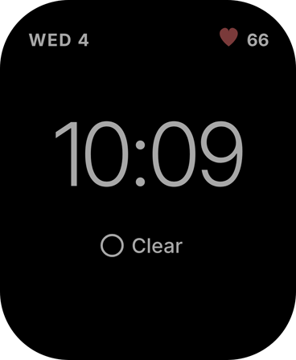
Always-On
05 / 10
Threshold
Threshold is inspired by the kolam drawn at Indian doorsteps every morning: a grid of rice-white dots and loops frames the time, and one loop fills with marigold colour every three minutes. You read the hour's progress like a drawing being completed, and on the hour the whole kolam glows before a fresh one begins. Always-on keeps only the dots, loops and time in grey.
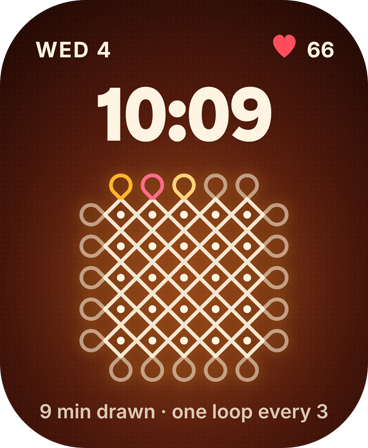
Active Display
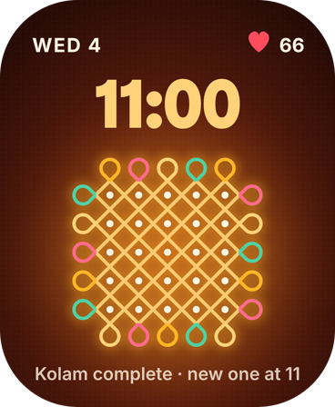
Interactive · Hour complete
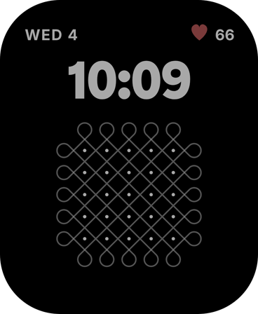
Always-On
06 / 10
Glance Deck
Glance Deck turns the watch face into a tiny notification centre: your next three things sit in a fanned stack of glass cards under a large clock, with the most urgent card (a delivery arriving in 6 minutes) at the front. Tap to spread the deck into a readable list and swipe to clear; weather, steps and music live as three glass tiles below. Always-on shows only the time and a '3 waiting' badge.
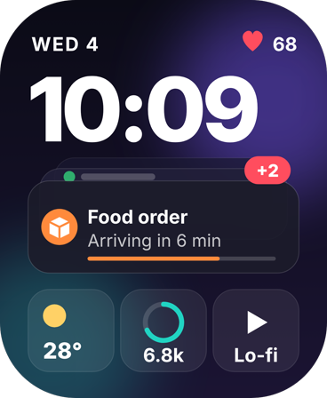
Active Display
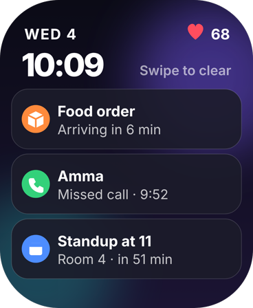
Interactive · Expanded deck
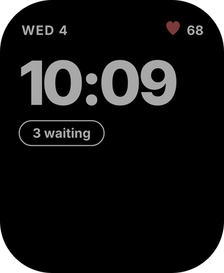
Always-On
07 / 10
Haze
Haze makes air quality something you can see: a city skyline sits behind the time, and as the air-quality index rises the scene fills with dusty haze until the buildings fade, while a coloured badge gives the exact number and a simple tip. When the air clears after rain the sky turns crisp blue and the face suggests opening a window. Always-on keeps the skyline outline and the AQI number on true black.
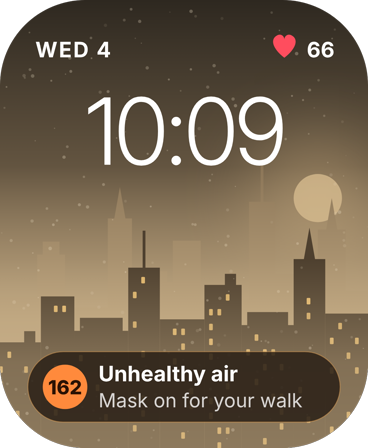
Active Display
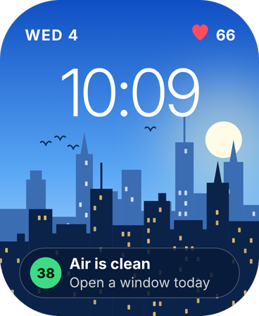
Interactive · Clean air
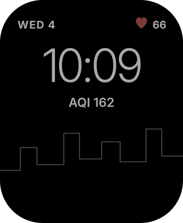
Always-On
08 / 10
Rest Moon
Rest Moon uses the moon's phase to show how rested you are: a full moon means you have slept enough, and the moon wanes into a thin crescent as sleep debt builds over the week. It is a calm, glanceable picture instead of a sleep score, and the card turns it into one suggestion such as an earlier bedtime. Always-on redraws the moon as a thin grey outline under the time.
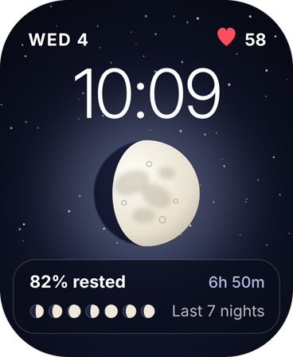
Active Display
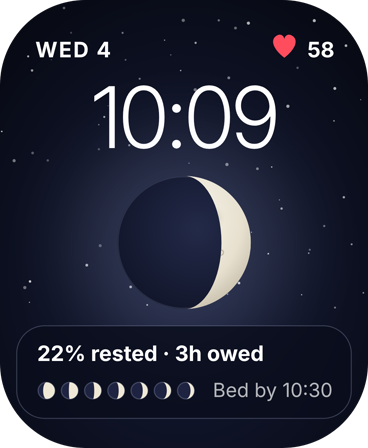
Interactive · Sleep debt
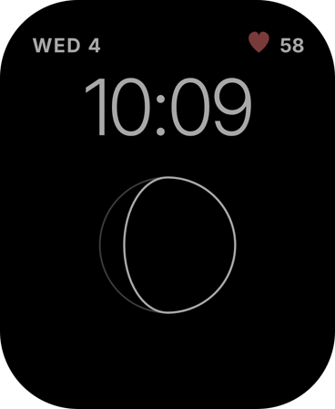
Always-On
09 / 10
Day Weave
Day Weave turns your day into cloth: twenty-four threads, one per hour, are woven in colour as you live it, indigo for sleep, green for movement and gold for work, with the current hour glowing on the loom. A swipe shows your whole week as a woven swatch, so habits become a pattern you can see rather than a chart. Always-on keeps the woven strip in grey under the time.
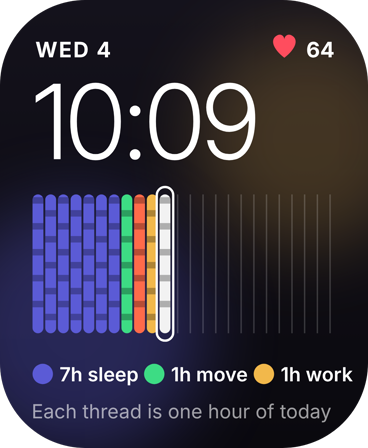
Active Display
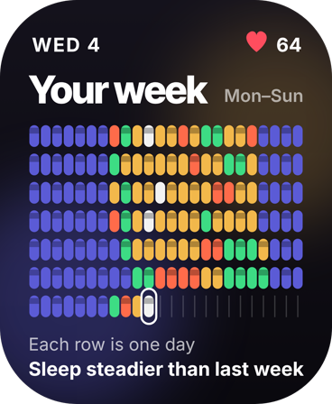
Interactive · Your week
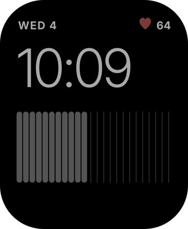
Always-On
10 / 10
Constellation
Constellation turns your day's conversations into a star map: each person you talked to becomes a star, brighter for longer calls, and the stars join in the order you spoke, so the shape of your social day appears behind the time. When someone close drifts away their star fades and the face suggests saying hi. Always-on keeps the constellation as grey points and lines on true black.